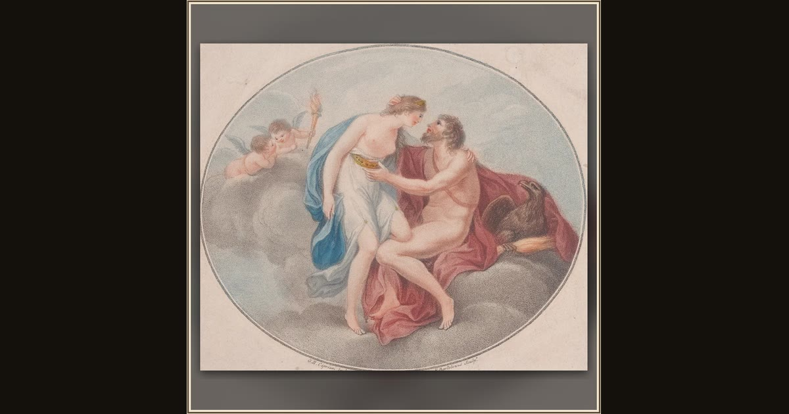

Jupiter and Juno on Mount Ida
Francesco Bartolozzi, after Giovanni Battista Cipriani · January 1, 1784 · met
Zeus draws Hera into an embrace amid clouds on Mount Ida; the nearby lines describe him taking her in his arms as fresh growth rises beneath them (14.347). Explore its place in Homer's Iliad, Book XIV, line 346.